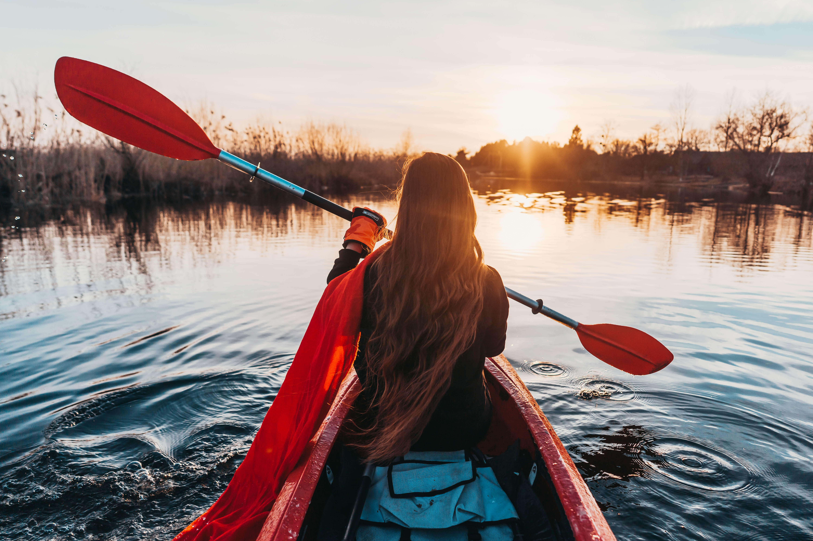

La capitale du Sénégal,dynamique et moderne, offre un melange unique de tradition et de modernité.
En savoir plus
Célébre pour ses eaux aux teintes particulières,le Lac Rose est une merveille naturelle du Sénégal.
En savoir plus
Une region verdoyante connue pour ses paysages,ses traditions et son Accueil chaleureux.
En savoir plusPlages, lacs, forêts et savanes à couper le souffle.
Traditions, musique, gastronomie et artisanat.
Découvrir et préserver les richesses du Sénégal.